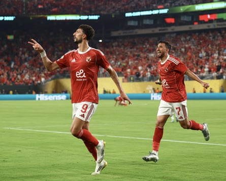

I t is a familiar take on the Club World Cup , but comes from a different perspective. “From the games I have watched, football has taken a lot away from the players,” says Kgosana Masaseng, the general secretary of Fifpro Africa.
“You are talking about teams that have just completed their domestic leagues, who were playing continental club championships. Players were also representing their national teams. So the schedule has been demanding. It has taken a toll and, now, there’s no break; it’s straight away into another competition.”
Masaseng’s concern is for the African teams, all of whom were knocked out at the group stage. Morocco’s Wydad, Mamelodi Sundowns of South Africa, Egypt’s Al Ahly and Espérance of Tunis did not get much of a purchase on the expanded tournament, though the Tunisian and the South African clubs earned gritty victories and Sundowns’ dynamic play against Borussia Dortmund won plaudits in an otherwise go-slow tournament. For Masaseng, the tournament has highlighted the strengths and weaknesses of the game across the continent.
A former football journalist and pundit, Masaseng now represents the interests of professional players in Africa . But he is also making a broader argument for change, in order “to grow the kids and grow football”, and is calling on the African game to focus on raising standards.
“Largely, our leagues are very poor, that’s for starters,” he says. “Second, they don’t even have infrastructure. I would love to see them working on gently is capacity building.
“That’s the first step, looking at the legal frameworks that govern the game and asking: ‘Are we all in line?’ Once we are all aligned, then we can talk about the next phase, which is to professionalise. Then we can look at the next phase, which is to grow the kids and grow football. But now there are small pockets of good progress and the rest are not joining. It’s not coordinated, which makes it difficult to sell the product.”
The scale and complexity of the challenge is stark. Not only are Africa’s biggest clubs lagging behind their European counterparts in terms of value, there are enormous discrepancies within the continent. Data compiled by Transfermarkt estimates that Al Ahly are the most valuable club in Africa with a market value of €48m. This contrasts with Real Madrid’s €1.3bn. At the same time, Al Ahly’s value is far greater than that of, say, the first-time champions of the Ghanaian Premier League, Bibiani Gold Stars, which Transfermarkt rates at €1.85m.
Egypt’s Al Ahly, thought to be Africa’s most valuable club, could not earn a win in Group A.Photograph: Ahmed Awaad/NurPhoto/Shutterstock
Key to the estimates are the players and Africa’s best continues to migrate. “The biggest disadvantage in our area is that we have a lot of players leaving the African continent for better leagues, for growth both financially and professionally,” says Masaseng.
“It could be because of better facilities to develop these players or whether the leagues in those countries are paying well. There are a mix of factors, but we need to retain our top talent in the continent so we can sell a better product. Then we’ll attract many other things that come with the game.”
Masaseng argues it is the responsibility of national leagues to lead change. “They are the people who are directly affected by this; you can’t leave this in another man’s hands. They can take a shopping list to the Confederation of African Football and say what they would [want to] do through club licensing requirements. The clubs should come and say: ‘We are happy to adhere to your regulations.’
“This is what we need to put on the table for discussion. If you do it that way, it will be more engaging, it will be broad-based.”
For Masaseng, the changes required start as simple as guaranteeing that players are paid and that stadiums are open when a match is scheduled to be played. “You still have clubs that qualify for African club championships, but they do not pay players. They do not honour their dues.
“We still have teams, whether clubs or national teams, ill-treating their opponents, locking up the stadium or not switching on the lights. At times broadcasters can turn up and be told the game is cancelled because the government has organised a celebration at the stadium. If you sell the airtime, you need to do what you say. If you are not professional enough to give a consistent product … that leads to a lack of media investment.”
The challenges are manifold and the mechanisms for fixing them are yet to be created. But Masaseng cites booming new audiences for the Africa Cup of Nations – “In 2023, we saw around 1.5 billion viewers on digital platforms” – as proof that once the foundations are fixed, African football can flourish. “Money alone is not the solution,” he says. “We need to first start with our governance structure, get things right, and then we can celebrate the money that we bring in. Otherwise, we are pouring money into a pit.”